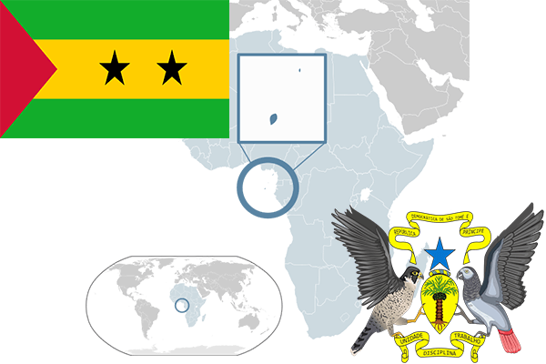

To`liq nomi: San Tome va Prinsipi Demokratik Respublikasi
Region: Afrika gʻarbiy sohili
Qonunchilik shakli: Respublika
Mustaqillik kuni: 12 iyul 1975-yil
Poytaxt: San Tome
Maydoni: 1,001 km²
Chegaradosh davlatlari: Yo’q
Aholisi: 199,910 (2016-yil)
Aholi zichligi: 187.17/km2
Aholining o`rtacha yoshi: 66,51 yil
Rasmiy tili: Portugal tili
Dini: Xristian
Pul birligi: Dobra
Telefon prefiksi: +239
Internet domen: .st
Xalqaro tashkilotlarga a`zoligi: BMT
Dengiz va okeanlarga chiqishi: Gvineya qo’ltig’i
YIM: Butun: $355 mil.(2017-yil) Jon boshiga: $1,668
Yirik shaharlari: San Tome